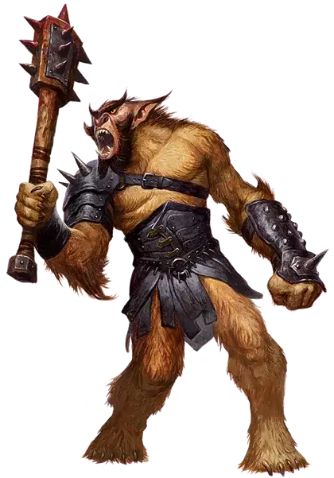

Багбир
Bugbear

Не жуки и не медведи, багбиры — неуклюжие двоюродные братья гоблинов и хобгоблинов. Имея корни в Стране Фей, первые багбиры обитали в укромных, труднодоступных и затенённых местах. Давным-давно и незаметно для всех они пришли на Материальный план, подстрекаемые богом-завоевателем Маглубиетом распространяться по всей мультивселенной. Столетия спустя они все еще обладают волшебным даром скрываться вне поля зрения, и многие из них ускользнули от влияния своего бога.
Они имеют длинные конечности, покрытые грубой шерстью, клиновидные уши и заострённые зубы. Несмотря на свое грозное телосложение, багбиры - тихие крадущиеся существа, благодаря магии фей, которая позволяет им прятаться в местах, кажущихся слишком маленькими для них.
ОСОБЕННОСТИ багбира
Вы обладаете следующими особенностями.
Увеличение характеристик. Либо значение одной характеристики по вашему выбору увеличивается на 2, а другой — на 1, либо значение трёх различных характеристик по вашему выбору увеличивается на 1.
Вид существа. Вы — Гуманоид. Вы также считаетесь гоблиноидом для любого необходимого условия или эффекта, который требует, чтобы вы были гоблиноидом.
Размер. Ваш размер — Средний.
Скорость. Ваша базовая скорость ходьбы — 30 футов.
Тёмное зрение. На расстоянии 60 футов вы при тусклом освещении можете видеть так, как будто это яркое освещение, и в темноте так, как будто это тусклое освещение. В темноте вы не можете различать цвета, только оттенки серого.
Наследие фей. Вы с преимуществом совершаете спасброски для того чтобы избежать или окончить на себе состояние очарован.
Длинные конечности. Когда вы в свой ход совершаете рукопашную атаку, ваша досягаемость увеличивается на 5 футов.
Мощное телосложение. При определении вашей грузоподъёмности, а также веса, который вы можете толкать, тянуть и поднимать, вы считаетесь существом на один размер больше.
Скрытность. Вы получаете владение навыком Скрытность. Кроме того, не протискиваясь, вы можете перемещаться и останавливаться в пространстве, достаточно большом для Маленького существа.
Внезапное нападение. Если вы попадете броском атаки по существу, которое ещё не совершало ход в текущем бою, то оно дополнительно получает 2к6 урона.
Языки. Ваш персонаж может говорить, читать и писать на Общем и еще одном языке, который по вашему мнению подходит для персонажа.